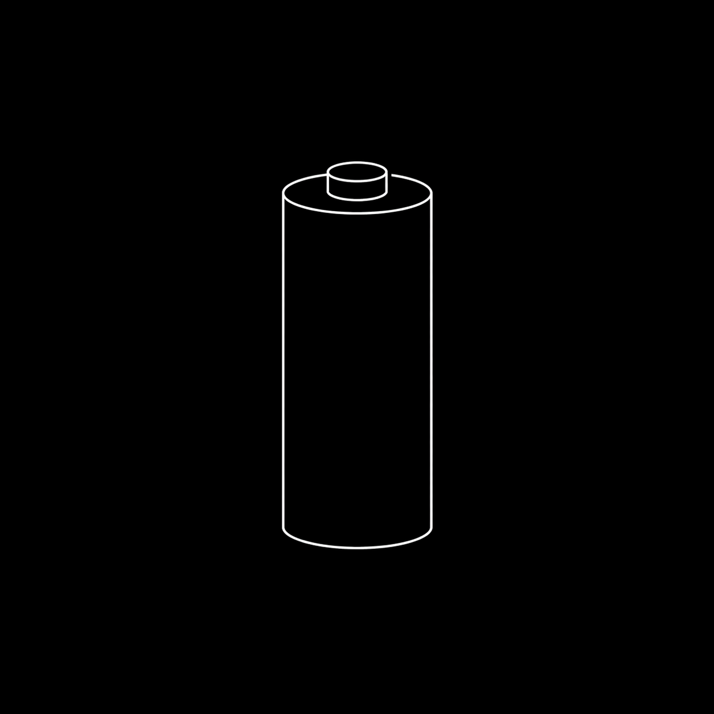
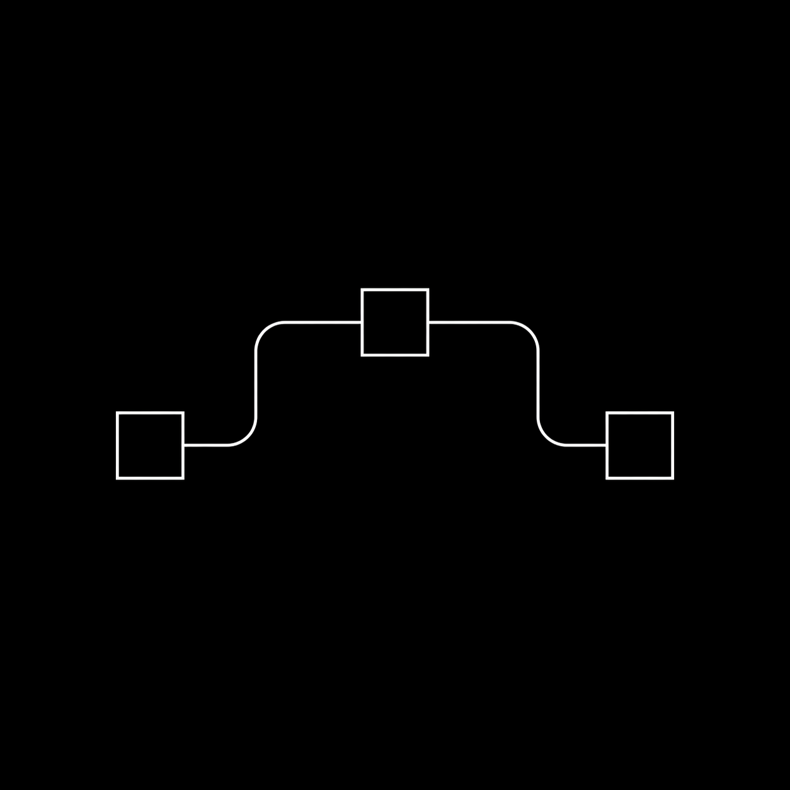
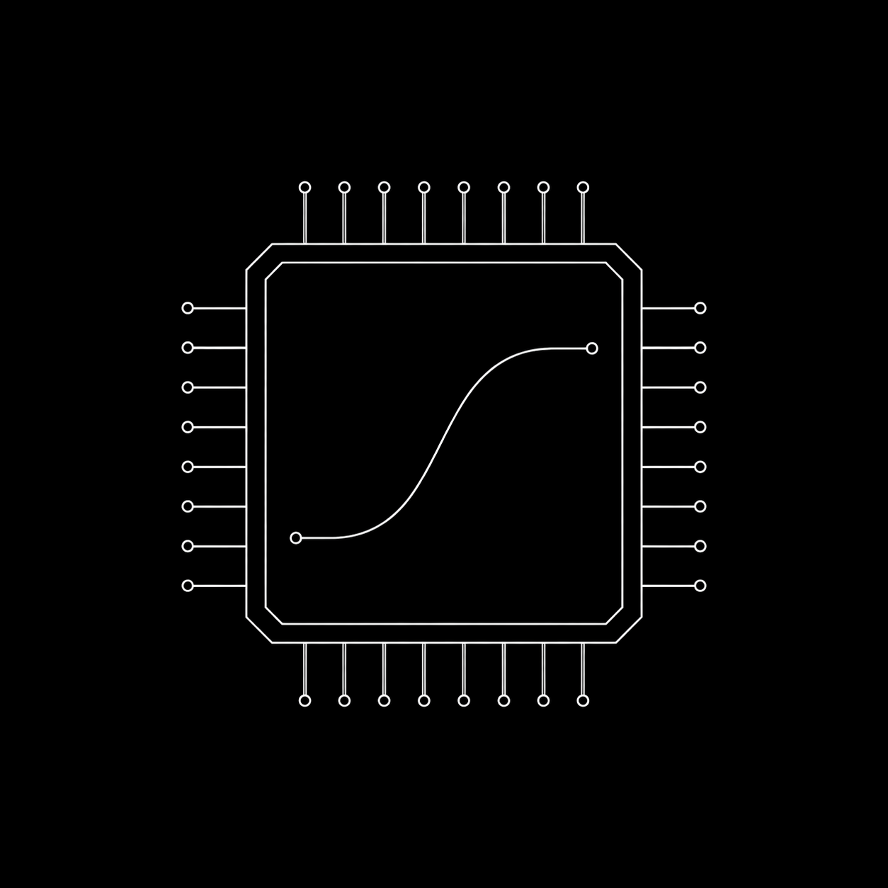
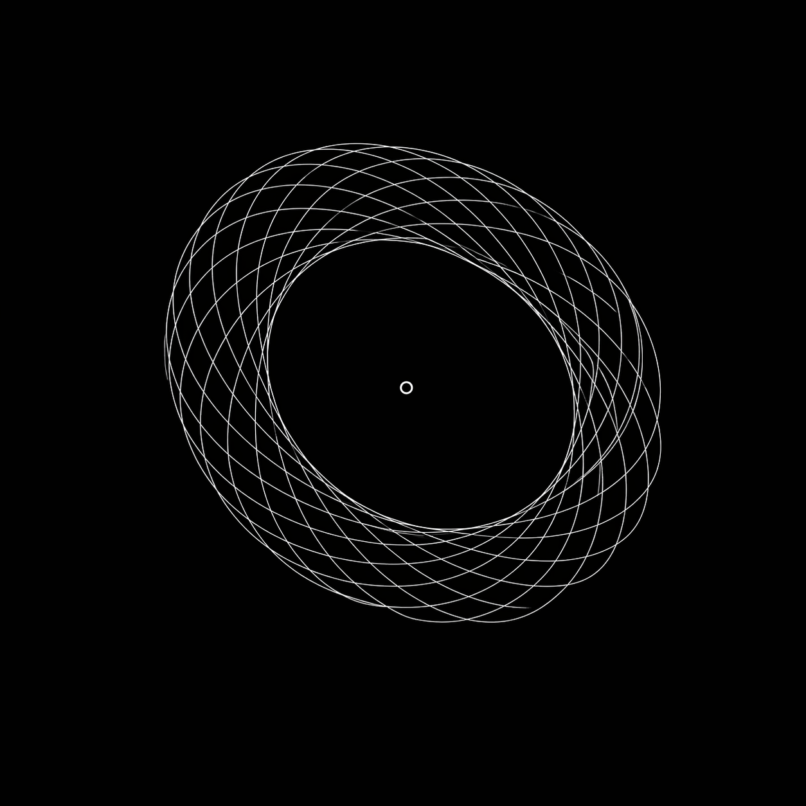

01

AI R&D for governed optimization.
Algorithmic Discovery, Evaluation-driven optimization.
Göther focuses on bounded technical systems where better decisions, measurable improvement, and operational trust have to move together.
01

02

03

04
